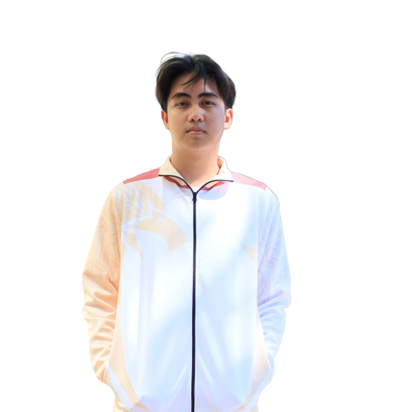
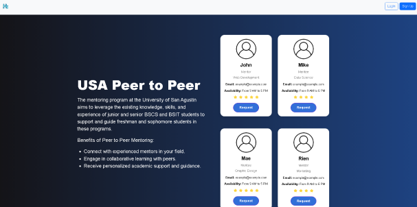

Rommel Louie Sumande
Frontend Developer
 Iloilo City, Philippines
Iloilo City, Philippines
Striving to become a successful web developer.
Resume
.png)
.png)

About me
I’m a web developer with a background in Information Technology and a focus on front-end development. Skilled in HTML, CSS, Bootstrap, and JavaScript, I create responsive and user-friendly websites. Currently, I’m expanding my expertise in JavaScript to build more dynamic web applications. I'm always open to connecting and exploring new web development opportunities!
Skills
Language
HTML
CSS
JavaScript
Frameworks
Bootstrap
Backend
PHP
Database
MySQL
Experience and Background
University of San Agustin
Bachelor of Science in Information Technology
2021-Present
·Web System 1
·Web System 2
·Capstone

Udemy
Web Developer Bootcamp
2024-Present
·Learning the fundamentals of HTML, CSS , JAVASCRIPT, Bootstrap, Php
·Build multiple projects
Projects

Peer to Peer Mentoring
·Developed a Mentor and Mentee Website for University of San Agustin-Information and Computer Science Program.
·Create generate a report, find a mentor or mentee, and admin dashboard.